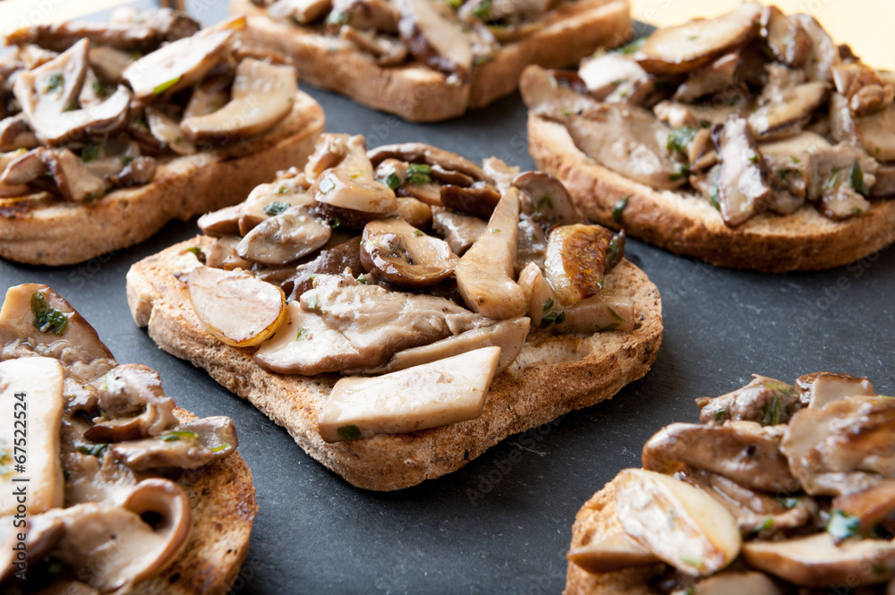

Crostini ai Funghi

Description
Meaning "little toasts" in Italian, crostini are small, thin slices of toasted bread, which are usually brushed with olive oil. The word also describes canapés consisting of small slices of toast with a savory topping such as cheese, shrimp, pâté or anchovies.
Ingredients
- 200 g mushrooms
- half a glass of dry white wine
- 1/2 baguette
- 1 garlic clove
- olive oil
- pepper
- salt
Steps
- Preheat oven: Set the oven rack to the middle position. Heat oven to 350ºF.
- Toast bread slices in the oven:
Using a pastry brush, brush both sides of the bread slices with 2 tablespoons of olive oil or more as needed. Arrange them in a single layer on a rimmed baking sheet.
- Sauté the mushrooms:
Add the sliced mushrooms and cook until tender, stirring frequently, about 5 minutes.
- Assemble and enjoy!